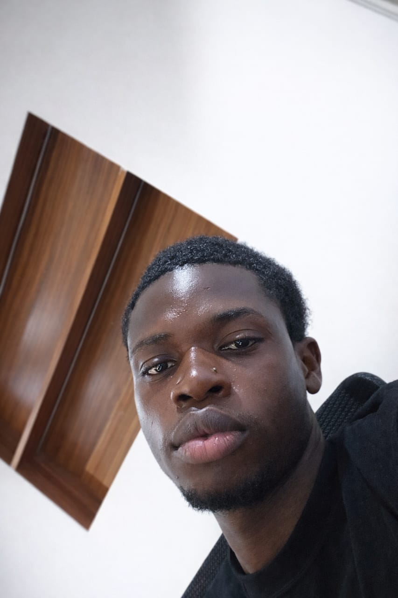

CSC 106 LAB PROJECT
A simple yet effective personal portfolio project showcasing my skills in web development.
A passionate cybersecurity student with a keen interest in web and software development.

A simple yet effective personal portfolio project showcasing my skills in web development.
Meet T.S DARE ABIKOYE, a passionate cybersecurity student juggling work and school.
This portfolio page is the CSC 106 lab assessment, built to demonstrate HTML structure, CSS styling, and a smooth navigation experience for a personal web project.